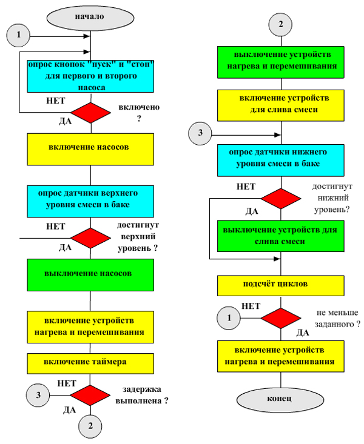
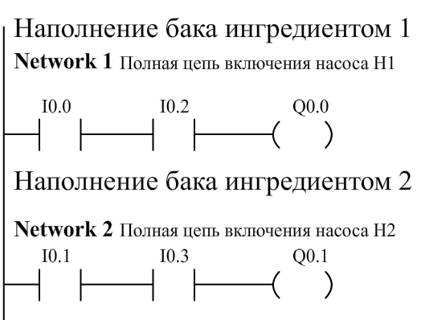
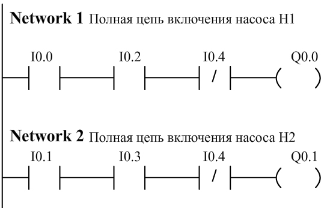
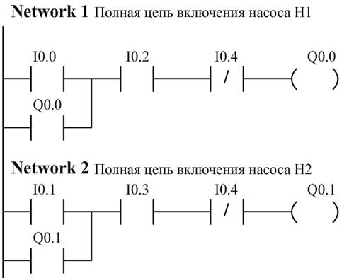
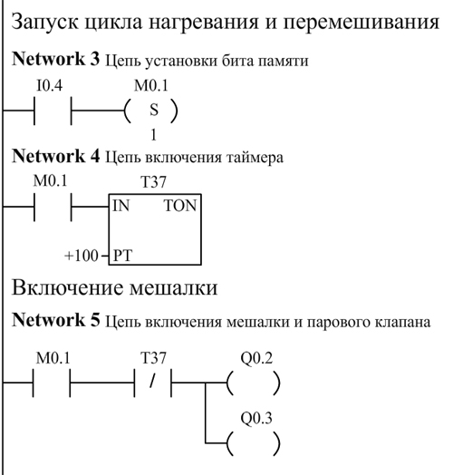
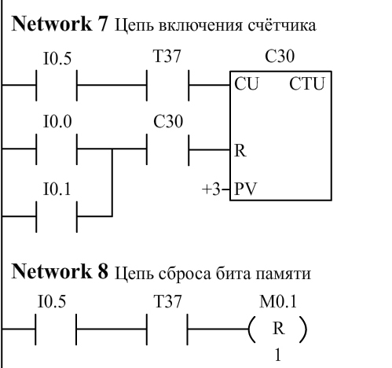
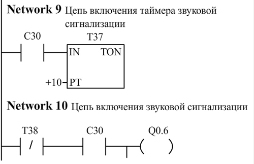

Алгоритм управления

В состав установки входят бак, насосы Н1 и Н2 для подачи ингредиентов в бак, паровой клапан, сливной клапан и сливной насос. В исходном состоянии установки бак пуст, все насосы отключены, клапаны закрыты.
Включение насосов Н1 и Н2 приводит к поступлению в бак ингредиентов 1 и 2 по подводящим трубопроводам (соотношение ингредиентов определяется технологическим процессом). Бак заполняется до тех пор, пока смесь ингредиентов не достигнет верхнего контрольного уровня, после чего их подача прекращается.
Далее поступившие в бак ингредиенты в течение 10 с перемешиваются мешалкой и одновременно прогреваются паром. После перемешивания мешалка выключается, подача пара прекращается, и готовая смесь выводится из бака через сливной клапан с помощью сливного насоса. По достижении нижнего контрольного уровня сливные клапан и насос отключаются, перекрывая выход смеси из бака.
Далее цикл повторяется. После выполнения трёх циклов приготовления и слива смеси в течение 1 с звенит звонок.
Адреса входов
| # п/п |
Датчик |
Адрес |
| 1 |
Кнопка "ПУСК 1" |
I0.0 |
| 2 |
Кнопка "ПУСК 2" |
I0.1 |
| 3 |
Кнопка "СТОП 1" |
I0.2 |
| 4 |
Кнопка "СТОП 2" |
I0.3 |
| 5 |
Сигнализатор "Верхний уровень" |
I0.4 |
| 6 |
Сигнализатор "Нижний уровень" |
I0.5 |
Адреса выходов
| # п/п |
Исполнительный механизм |
Адрес |
| 1 |
Насос Н1 |
Q0.0 |
| 2 |
Насос Н2 |
Q0.1 |
| 3 |
Мешалка |
Q0.2 |
| 4 |
Паровой клапан |
Q0.3 |
| 5 |
Сливной клапан |
Q0.4 |
| 6 |
Сливной насос |
Q0.5 |
| 7 |
Звонок |
Q0.5 |

Отключение насосов при достижении верхнего уровня

Самоподхват при включении насосов

Запуск цикла нагревания и перемешивания.
Включение мешалки

Подсчёт циклов

Окончание подсчёта циклов.
Звуковая сигнализация.
